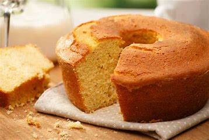

Bolo de chocolate
Ingredientes
- 3 ovos
- 1 e meia xícara de chá de açúcar
- Meia xícara de chá de óleo
- 1 xícara de chá de chocolate em pó
- 2 xícaras de chá de farinha de trigo
- 1 xícara de chá de água quente
- 1 colher de sopa de fermento em pó
Modo de Preparo
Em uma tigela, coloque 3 ovos, 1 e meia xícara de chá de açúcar, meia xícara de chá de óleo, 1 xícara de chá de chocolate em pó e 2 xícaras de chá de farinha de trigo. Misture delicadamente os ingredientes.
Em seguida, adicione 1 xícara de chá de água quente, 1 colher de sopa de fermento em pó e bata até ficar homogêneo.
Transfira a massa para uma forma untada e enfarinhada com uma mistura de farinha de trigo e chocolate em pó. Leve para assar em forno preaquecido a 180 graus Celsius por 40 minutos.
Bolo de fubá
Ingredientes
- 3 ovos
- 1 xícara de chá de óleo de soja
- 1 xícara de chá de leite
- 1 xícara de chá de fubá
- 2 xícaras de chá de farinha de trigo
- 1 xícara de chá de açúcar
- 1 colher de sopa de fermento em pó
- Erva-doce a gosto
Modo de Preparo
No liquidificador, coloque 3 ovos, 1 xícara de chá de óleo de soja, 1 xícara de chá de leite, 1 xícara de chá de fubá, 2 xícaras de chá de farinha de trigo, 1 xícara de chá de açúcar e 1 colher de sopa de fermento em pó. Bata até ficar homogêneo.
Adicione erva-doce a gosto e misture apenas para incorporar o ingrediente à massa.
Transfira a mistura para uma forma untada e enfarinhada. Deixe um terço da forma vazia para evitar que transborde no forno.
Leve para assar em forno preaquecido a 180 graus Celsius por 40 minutos.
Bolo de limão

Ingredientes
- 4 ovos
- 1 xícara de óleo
- 1 xícara de leite
- 1 limão
- 2 xícara de açúcar
- 2 xícara de farinha
- 2 colheres de café de fermento em pó
- manteiga e farinha para untar
Modo de Preparo
Corte o limão e esprema na xícara de leite e aguarde no minimo 5 minutos para coalhar bem, não precisa coar.
Coloque no liquidificador todos os líquidos (ovos,óleo,e a mistura do leite com limão) bata bem ate ficar homogenia
Coloque em seguida as 2 xícaras de açúcar sem desligar.
Desligue um pouco e ligue novamente colocando 1 xícara de farinha deixe misturar bem em seguida a outra e o fermento bata bem e depois desligue e de 3 toques no pulsar do liquidificador.
Coloque na forma untada e no forno que deve ter sido ligado uns 5 minutos antes e estar a 180 graus.
Por cerca de 40 minutos ou ate ficar douradinho
Retire , espere esfriar e desenforme.